<title>Finances, tes retours · 15.11</title>
<meta name="claude:viewport-fit-sides" content="cover">
<style>
/* Ses retours du 15.11 : une section par retour, sa base choisie en pointillé, puis les mini maquettes dans l'ordre du critique. */
:root{--bg:#f4f6f8;--fg:#1b1f24;--mut:#5d6670;--line:#d9dee4;--card:#ffffff;--acc:#2f6fa8;--ref:#6b6f75;--fav:#7a3fb0;--ok:#3d7a3a}
@media (prefers-color-scheme:dark){:root:not([data-theme="light"]){--bg:#121518;--fg:#e8ecf0;--mut:#a0a9b2;--line:#2c333a;--card:#1a1f24;--acc:#86b9e6;--ref:#9aa0a6;--fav:#c9a2ee;--ok:#8fc48a;color-scheme:dark}}
:root[data-theme="dark"]{--bg:#121518;--fg:#e8ecf0;--mut:#a0a9b2;--line:#2c333a;--card:#1a1f24;--acc:#86b9e6;--ref:#9aa0a6;--fav:#c9a2ee;--ok:#8fc48a;color-scheme:dark}
body{background:var(--bg);color:var(--fg);font:15px/1.5 system-ui,-apple-system,"Segoe UI",sans-serif;padding-left:max(16px,env(safe-area-inset-left,0px));padding-right:max(16px,env(safe-area-inset-right,0px));padding-block:24px 48px}
main{max-width:1280px;margin:0 auto;display:flex;flex-direction:column;gap:36px}
h1{font-size:24px;margin:0;text-wrap:balance}h2{font-size:19px;margin:0;text-wrap:balance}
p{margin:0;max-width:72ch}.mut{color:var(--mut);font-size:14px}
section{display:flex;flex-direction:column;gap:12px}
.row{display:grid;grid-template-columns:repeat(5,minmax(0,1fr));gap:12px}
@media (max-width:1000px){.row{grid-template-columns:repeat(3,minmax(0,1fr))}}
@media (max-width:640px){.row{grid-template-columns:repeat(2,minmax(0,1fr))}}
figure{margin:0;background:var(--card);border:1px solid var(--line);border-radius:10px;padding:8px;display:flex;flex-direction:column;gap:6px;min-width:0}
figure.cand{border:2px solid var(--acc)}
figure[data-reference]{border-style:dashed}
figure > button{all:unset;cursor:zoom-in;display:block;border-radius:6px;overflow:hidden;background:#fff;border:1px solid var(--line);max-height:460px}
figure > button:focus-visible{outline:2px solid var(--acc);outline-offset:2px}
figure img{display:block;width:100%;height:auto}
figcaption{display:flex;flex-direction:column;gap:2px;font-size:14px}
.pill{align-self:flex-start;font-size:14px;font-weight:600;padding:0 8px;border-radius:999px;border:1px solid currentColor}
.p-ref{color:var(--ref)}.p-fav{color:var(--fav)}.p-ok{color:var(--ok)}
.id{color:var(--mut);font-variant-numeric:tabular-nums}
blockquote{margin:0;padding-left:12px;border-left:3px solid var(--line);color:var(--mut);font-size:14px;max-width:72ch}
dialog{border:0;padding:0;background:transparent;max-width:min(96vw,520px);max-height:94vh}
dialog::backdrop{background:rgba(0,0,0,.7)}
dialog img{display:block;width:100%;height:auto;border-radius:8px}
dialog .close{position:sticky;top:0;display:block;margin-left:auto;font:600 15px system-ui;background:var(--card);color:var(--fg);border:1px solid var(--line);border-radius:999px;padding:4px 14px;cursor:pointer}
</style>
<main>
<header style="display:flex;flex-direction:column;gap:6px">
<h1>Finances : tes retours du 15.11</h1>
<p class="mut">Suite de la page « Finances : les vues sous les boutons ». Tes choix notés : Modifier m2mo-a, Apport m1ap-c, Fiche m2fo-a avec m2fo-c.</p>
</header>

<section id="a-choisir"><h2>À choisir</h2>
<p>Modifier : laquelle des quatre façons ? Payer : laquelle des quatre ? Apport et fiche : bon comme ça, ou pas ?</p>
<p class="mut">Cadre pointillé : ta base choisie. Cadre bleu : la première du critique.</p></section>

<section id="filtres"><h2>1 · « Les filtres… Là il y a aucun filtre ? »</h2>
<blockquote>« 1 les filtre je comprends pas ils sont dans la synthèse normalement ?? Là il y a aucun filtre ? »</blockquote>
<p>Ma capture « aujourd'hui » était ratée : le panneau s'ouvre sous la liste, hors de l'image. La voici refaite.</p>
<p class="mut">Les lignes de la Synthèse (Brassage, Fixes…) ouvrent toujours Opérations déjà filtré : rien ne change. Le bouton Filtres d'Opérations en est la seconde porte.</p>
<div class="row">
<figure data-vignette data-reference><button data-agrandir="img/auj-fi.png"></button><figcaption><span class="pill p-ref">Aujourd'hui</span><b>Opérations › Filtres, panneau ouvert</b></figcaption></figure>
</div></section>

<section id="modifier" data-choix="mo"><h2>2 · Modifier : « il y a pas vraiment moyen de modifier ?? »</h2>
<p class="mut">Cause : une opération payée garde son montant sous cadenas (règle actuelle de l'app). Ici tout se modifie, montant compris ; exemple 42,00 → 45,50 sur le nettoyant déjà payé.</p>
<div class="row">
<figure data-vignette data-reference><button data-agrandir="img/m2mo-a.png">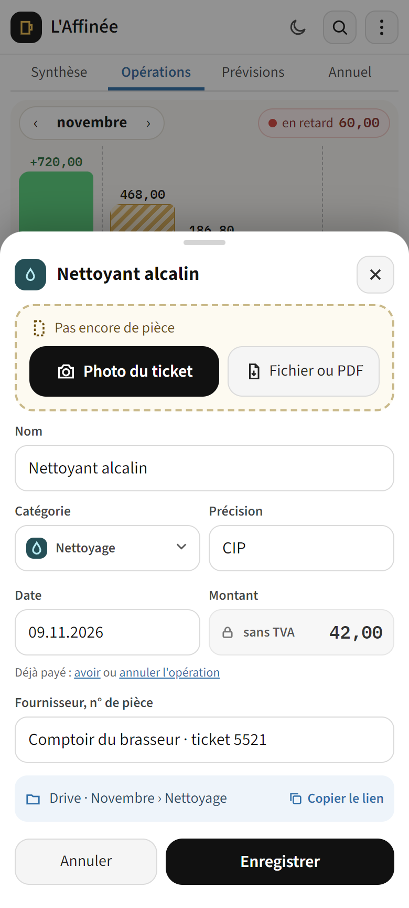</button><figcaption><span class="pill p-ref">Ta base</span><b>La feuille rangée, pièce en tête</b> <span class="id">m2mo-a · montant sous cadenas</span></figcaption></figure>
<figure data-vignette data-variante class="cand"><button data-agrandir="img/m5mo-c.png">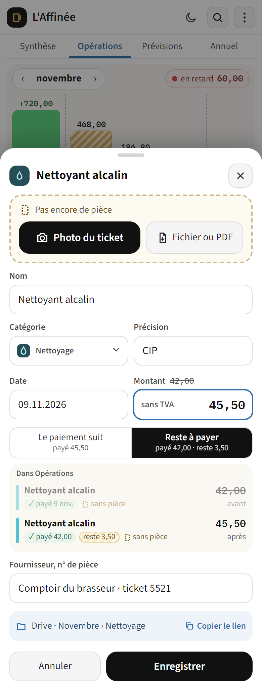</button><figcaption><span class="pill p-fav">1 · critique</span><b>Tu choisis, avant / après</b> <span class="id">m5mo-c · chaude</span></figcaption></figure>
<figure data-vignette data-variante><button data-agrandir="img/m5mo-a.png">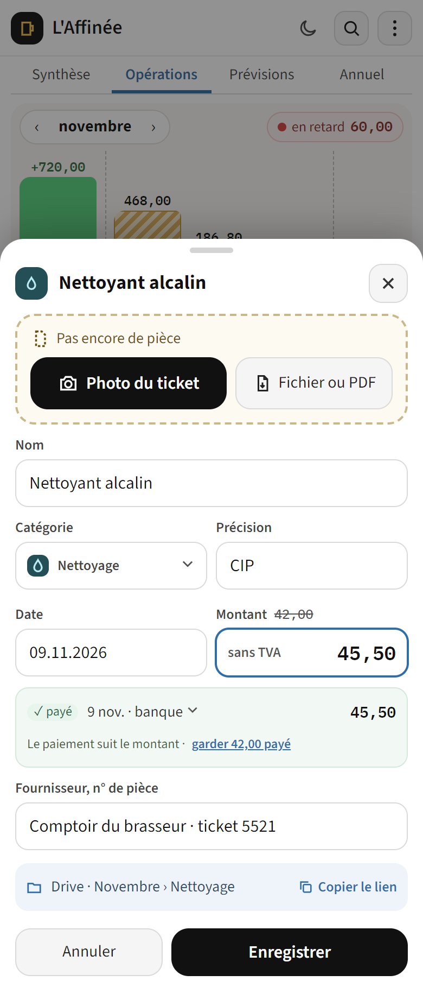</button><figcaption><span class="pill p-ok">2</span><b>Le paiement suit</b> <span class="id">m5mo-a · tiède</span></figcaption></figure>
<figure data-vignette data-variante><button data-agrandir="img/m5mo-b.png">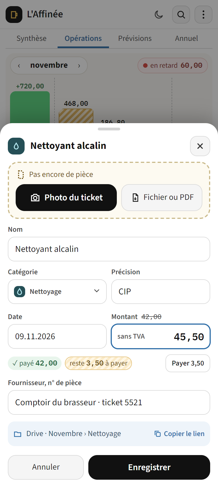</button><figcaption><span class="pill p-ok">3</span><b>La différence passe à payer</b> <span class="id">m5mo-b · froide</span></figcaption></figure>
<figure data-vignette data-variante><button data-agrandir="img/m5mo-d.png">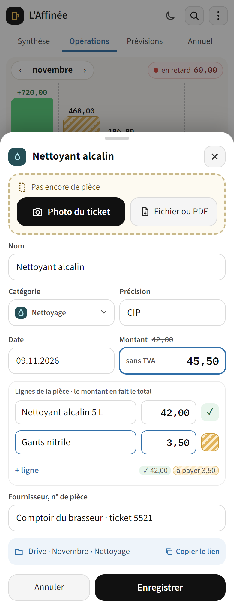</button><figcaption><span class="pill p-ok">4</span><b>Les lignes refont le total</b> <span class="id">m5mo-d · libre</span></figcaption></figure>
</div></section>

<section id="payer" data-choix="pa"><h2>3 · Payer : « pas de justificatif ? »</h2>
<p class="mut">Les quatre Payer d'hier, chacune avec son justificatif (photo ou fichier), le reste inchangé.</p>
<div class="row">
<figure data-vignette data-variante class="cand"><button data-agrandir="img/m5pa-a.png">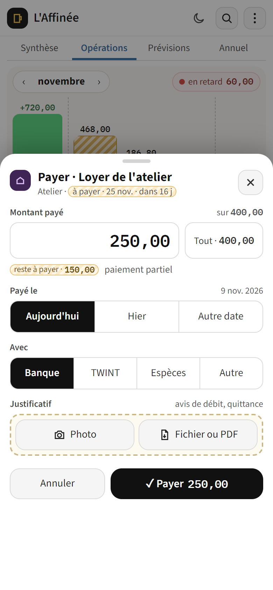</button><figcaption><span class="pill p-fav">1 · critique</span><b>La feuille rangée</b> <span class="id">m5pa-a · tiède</span></figcaption></figure>
<figure data-vignette data-variante><button data-agrandir="img/m5pa-c.png">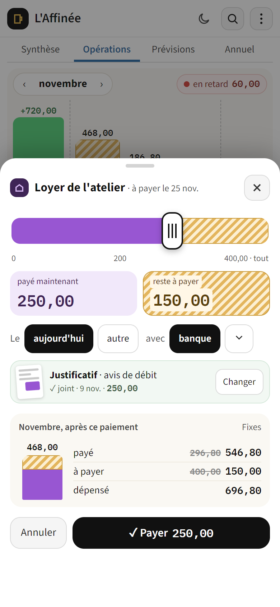</button><figcaption><span class="pill p-ok">2</span><b>La barre se tire</b> <span class="id">m5pa-c · chaude</span></figcaption></figure>
<figure data-vignette data-variante><button data-agrandir="img/m5pa-d.png">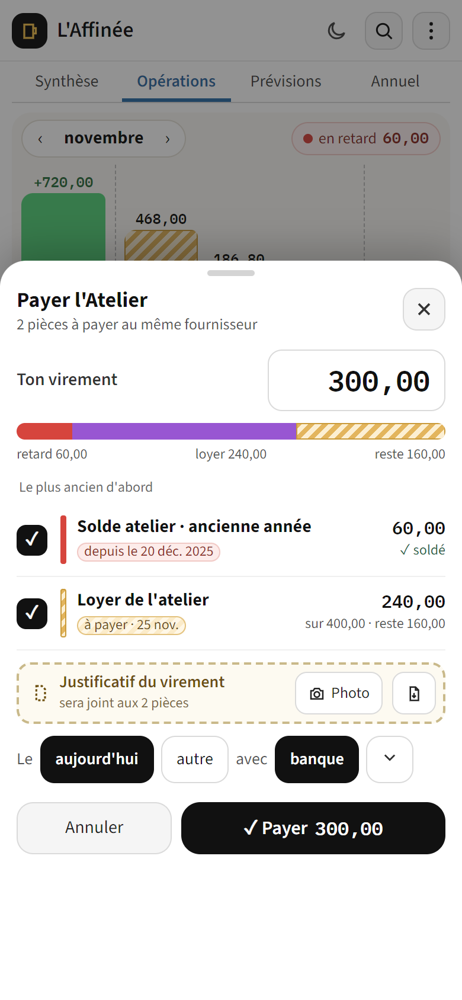</button><figcaption><span class="pill p-ok">3</span><b>Un virement, plusieurs pièces</b> <span class="id">m5pa-d · libre</span></figcaption></figure>
<figure data-vignette data-variante><button data-agrandir="img/m5pa-b.png">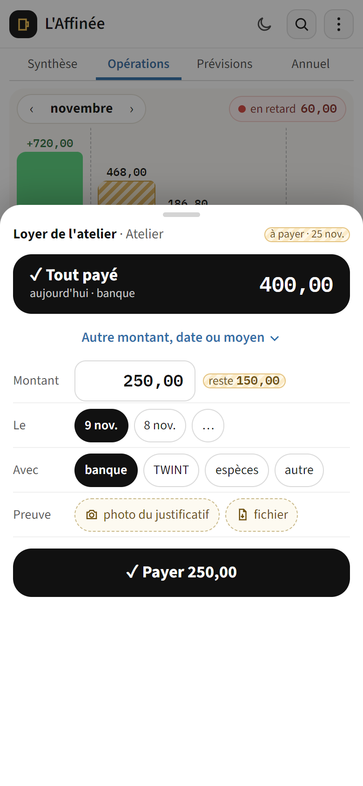</button><figcaption><span class="pill p-ok">4</span><b>Un geste « Tout payé »</b> <span class="id">m5pa-b · froide · justificatif à un toucher</span></figcaption></figure>
</div></section>

<section id="apport" data-choix="ap"><h2>4 · Apport : ton choix, avec justificatif</h2>
<div class="row">
<figure data-vignette data-reference><button data-agrandir="img/m1ap-c.png">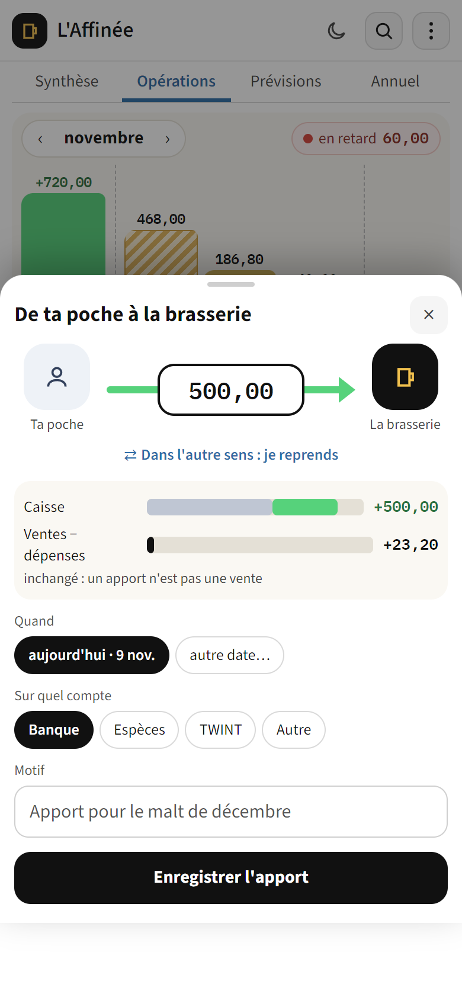</button><figcaption><span class="pill p-ref">Ta base</span><b>Les deux poches</b> <span class="id">m1ap-c</span></figcaption></figure>
<figure data-vignette data-variante class="cand"><button data-agrandir="img/m5ap-a.png">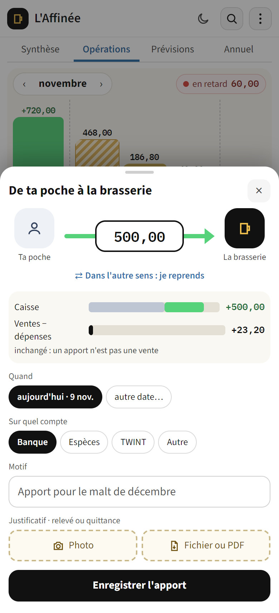</button><figcaption><span class="pill p-fav">Proposée</span><b>Les deux poches, avec justificatif</b> <span class="id">m5ap-a</span></figcaption></figure>
</div></section>

<section id="fiche" data-choix="fo"><h2>5 · Fiche : la rangée avec la facture en barre</h2>
<p class="mut">Tu as cité les deux : voici m2fo-a avec la barre de m2fo-c. Ou l'une des deux telle quelle ?</p>
<div class="row">
<figure data-vignette data-reference><button data-agrandir="img/m2fo-a.png">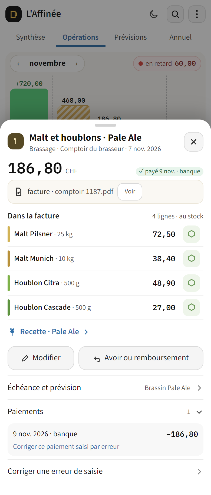</button><figcaption><span class="pill p-ref">Citée</span><b>La fiche rangée</b> <span class="id">m2fo-a</span></figcaption></figure>
<figure data-vignette data-reference><button data-agrandir="img/m2fo-c.png">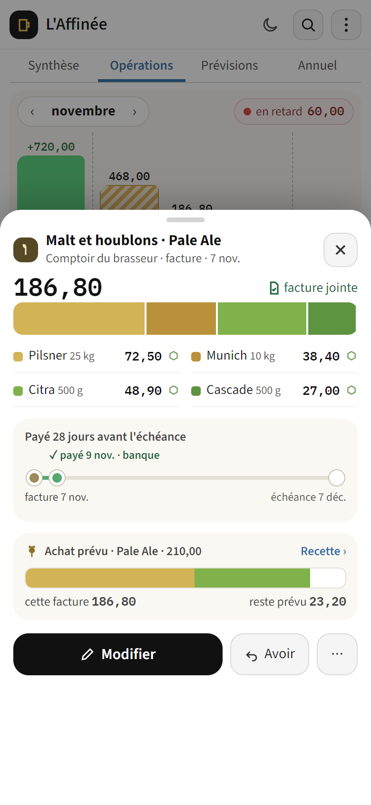</button><figcaption><span class="pill p-ref">Citée</span><b>La facture en barre</b> <span class="id">m2fo-c</span></figcaption></figure>
<figure data-vignette data-variante class="cand"><button data-agrandir="img/m5fo-a.png">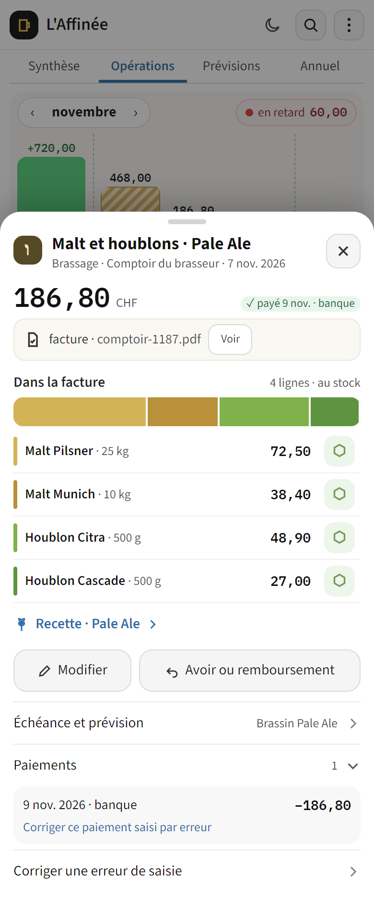</button><figcaption><span class="pill p-fav">Proposée</span><b>Les deux réunies</b> <span class="id">m5fo-a</span></figcaption></figure>
</div></section>
</main>
<dialog id="vue"><button class="close" type="button">Fermer</button></dialog>
<script>
(function(){var d=document.getElementById('vue'),i=d.querySelector('img');
document.querySelectorAll('[data-agrandir]').forEach(function(b){b.addEventListener('click',function(){var s=b.getAttribute('data-agrandir');i.src=s;i.alt=s;d.showModal();});});
d.querySelector('.close').addEventListener('click',function(){d.close();});
d.addEventListener('click',function(e){if(e.target===d)d.close();});})();
</script>
